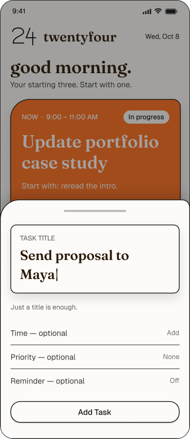

1
Make task creation lightweight
Evidence5 of 9 plan in their heads; adding tasks took longer than expected.
Design questionCapture a task without planning the whole day?

Alternatives worth evaluating
- A form with several required fields
- ✓ SelectedA title-first flow with optional details
- A guided planning flow